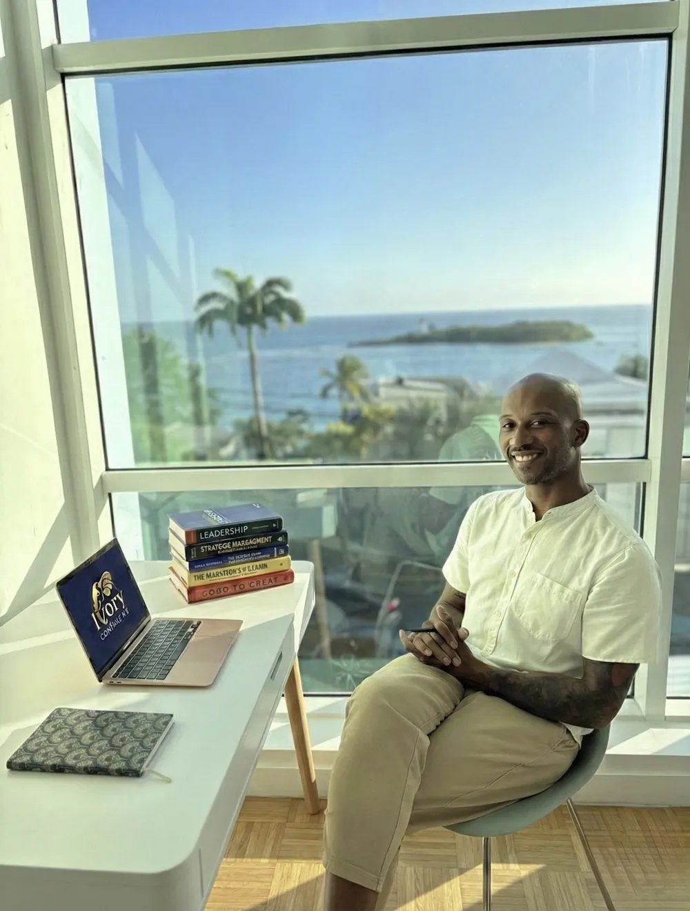

Je transforme le management par les neurosciences
Je suis Nadjé, fondateur d'Ivory Consulting, un cabinet de neuromanagement installé en Guadeloupe. J'accompagne les dirigeants de TPE et PME, les collectivités, les responsables RH et les managers qui souhaitent améliorer durablement le fonctionnement de leurs équipes grâce aux apports des neurosciences cognitives.
J'ai créé Ivory Consulting en partant d'un constat simple : les tensions managériales, les difficultés de communication, le désengagement ou les conflits sont souvent traités à travers les personnalités ou la motivation. Pourtant, le fonctionnement du cerveau explique une grande partie de ces comportements et offre des leviers d'action concrets pour les prévenir.
Ma conviction est simple : lorsqu'on comprend les mécanismes cognitifs qui influencent nos décisions, notre attention, notre gestion du stress et nos interactions, il devient possible de faire évoluer les pratiques managériales de façon durable.
Certifié par La Fabrique à Neurones, je m'appuie sur huit ateliers cognitifs fondés sur les connaissances actuelles en neurosciences pour aider les organisations à renforcer la coopération, améliorer la communication, développer un management plus efficace et prévenir les tensions avant qu'elles ne s'installent.
Une approche ancrée dans la sagesse afro-caribéenne
Les neurosciences confirment ce que nos cultures savent depuis toujours : le cerveau humain est fait pour le lien. Ivory Consulting unit la rigueur scientifique et l'héritage des Antilles et de l'Afrique, parce qu'un management qui nous ressemble est un management qui fonctionne.
Le Lakou
L'espace commun où chacun a sa place et son rôle. En entreprise : le sentiment d'appartenance, besoin fondamental du cerveau social.
Lyannaj
Faire lien, se solidariser pour avancer ensemble. La coopération n'est pas une option : notre cerveau est fait pour ça, encore faut-il savoir l'activer.
Poto Mitan
Le pilier central qui soutient tout. Le dirigeant qui porte tout seul finit par s'épuiser. J'aide les « poto mitan » à déléguer sans s'effondrer.
Ubuntu
« Je suis parce que nous sommes. » L'intelligence collective avant la performance individuelle, une intuition confirmée par les neurosciences sociales.
Une précision utile. Le Lakou, le Lyannaj, le Poto Mitan, l'Ubuntu sont ici des grilles de lecture partagées, pas des pratiques de soin. Ce sont des mots que vos équipes comprennent immédiatement, et qui rendent tangibles des notions de neurosciences sociales autrement abstraites. L'héritage culturel sert la pédagogie ; la méthode, elle, reste celle de la recherche.
Il est place pour tous au rendez-vous de la conquête.
Armez-vous de science jusqu'aux dents.
Ô mon corps, fais de moi toujours un homme qui interroge !
Il faut vouloir donner le meilleur de soi.
Il reste de belles causes à défendre. Elles peuvent fédérer les énergies.
Ma promesse aux dirigeants caribéens
91% des salariés disent que la QVCT est un sujet capital, mais 2 sur 3 ne sont pas satisfaits. En Guadeloupe, les dirigeants de TPE n'ont ni le budget pour un cabinet RH parisien, ni le temps pour une démarche de 6 mois. Je suis là pour ça.
Positionnement unique
Le seul cabinet en Guadeloupe à proposer des ateliers cognitifs de neuromanagement certifiés par la recherche.
Méthode scientifique
8 ateliers cognitifs construits à partir de la recherche, pas des formations génériques.
Ancrage local
Je connais votre réalité. Mes exemples, mes cas, mes références : la Guadeloupe.
Effets observables
Baisse des tensions signalées, climat d'équipe, engagement : des effets que vous pouvez suivre avec vos propres indicateurs.
« Je recommande cet atelier, qui fait appel à des connaissances parfois oubliées. Que ce soit dans l'entreprise ou dans le secteur public, cette approche contribuerait à faire grandir les équipes et à développer une meilleure intelligence collective. Un grand bravo aux collègues, vous étiez au top ! »
« Formation enrichissante permettant d'appréhender les mécanismes de l'apprentissage et du fonctionnement de la mémoire. Le formateur, bienveillant et à l'écoute des participants, favorise les échanges et, par des exemples et des jeux, contribue à la clarté des points abordés. »
« Formation très instructive ! J'ai pu apprendre énormément de choses sur le fonctionnement du cerveau et j'ai beaucoup apprécié les ateliers aussi. Des clés concrètes, notamment sur la préparation mentale. »
« Formation de qualité, claire et accessible. Les contenus abordés permettent de mieux comprendre le fonctionnement de la mémoire et les mécanismes de l'apprentissage. »
« Un atelier agréable et très constructif. Un contenu intéressant et pratique, animé avec excellence. »
« Très bonne séance et formateur très à l'écoute. » (Joélick S.)
« Formation très enrichissante et évolutive. Je la recommande. » (Annick A.)
« Nadjé est intervenu dans notre espace avec un atelier de 2h sur la communication et la gestion du stress. Toute l'équipe a compris pourquoi les tensions montaient lors des périodes chargées. Trois mois après : zéro conflit, une cohésion retrouvée, et nos clientes le ressentent. »
« En tant que cabinet de conseil, nous avions du mal à maintenir la cohésion en période de forte charge. Nadjé a apporté une lecture neuroscientifique de nos dysfonctionnements que je n'aurais jamais eue seul. Le programme Cerveau & Management a transformé notre façon de collaborer. »
Échanger directement avec moi
30 minutes, en visio ou sur site. Pas de discours commercial : on regarde votre situation et je vous dis ce que j'en pense.
Réserver mon audit gratuit